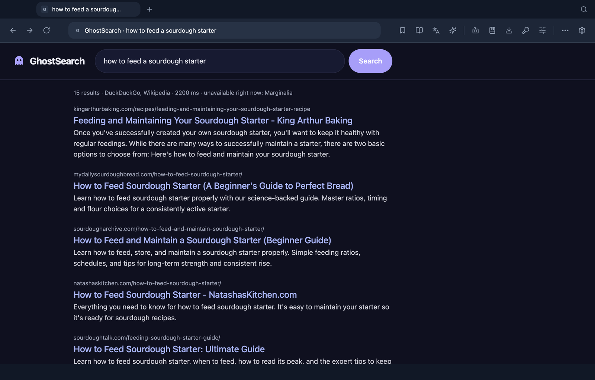
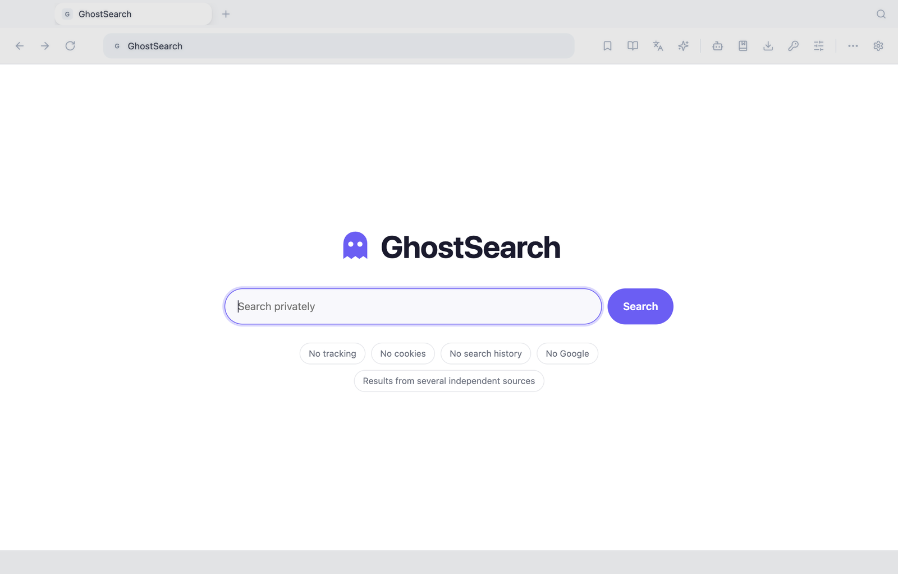
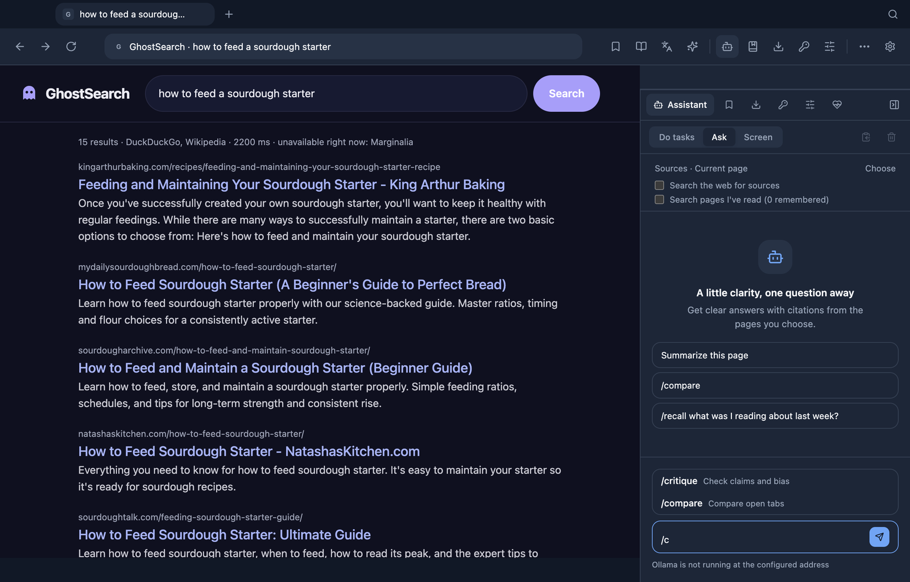
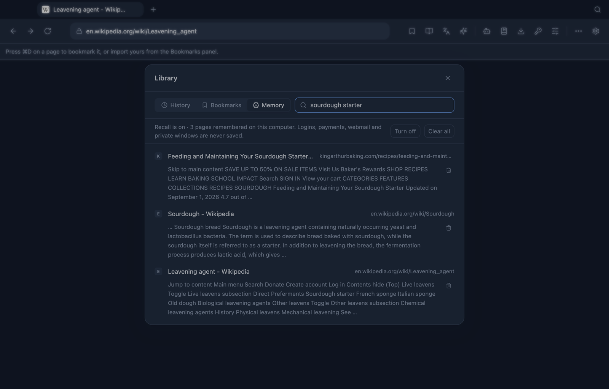
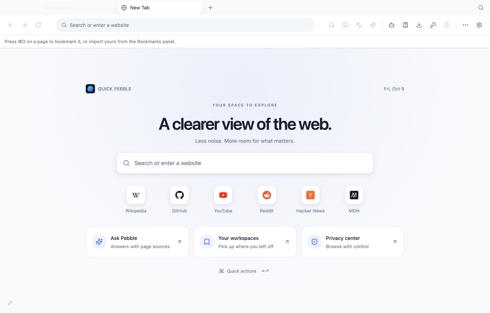
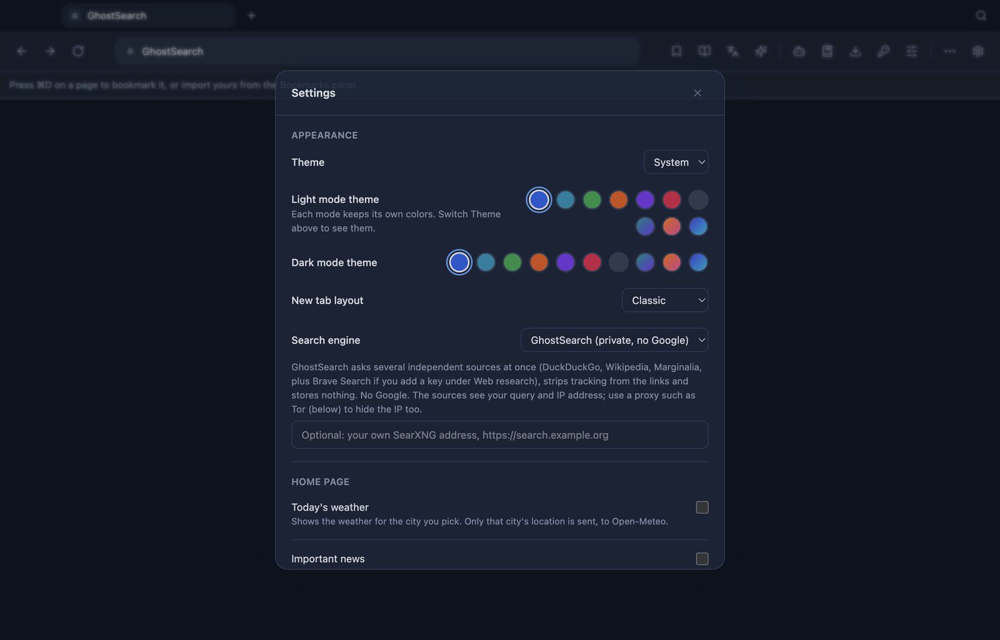
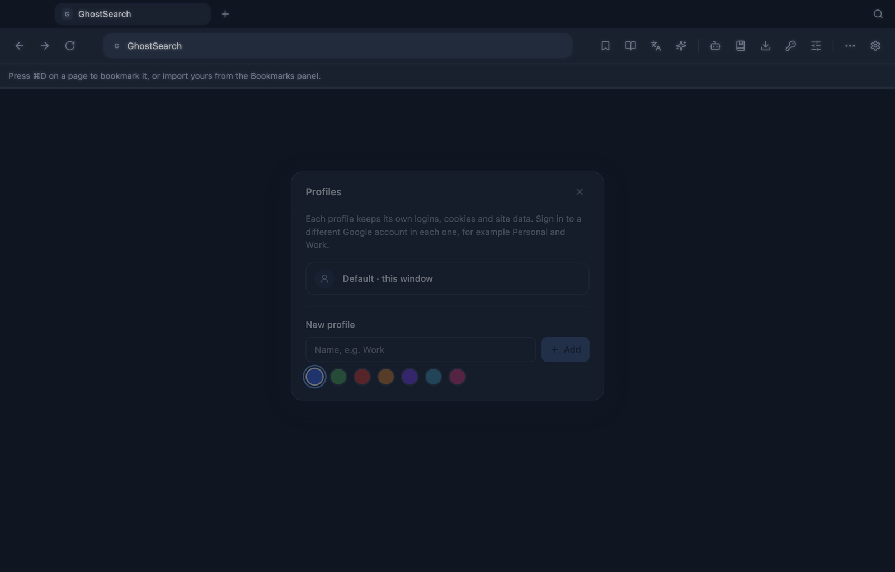
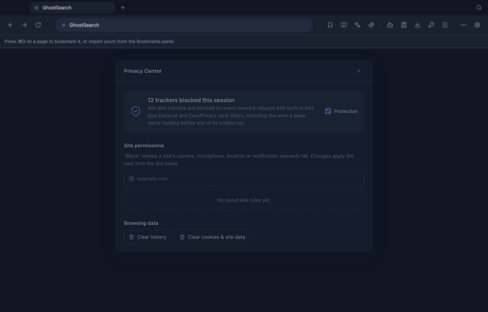

Browse quicker. Browse privately.
Quick Pebble is a calm, fast browser on real Chromium, with its own private search engine, ad and tracker blocking built into the network layer, separate profiles, a password manager, and an AI assistant that runs on your own machine.
macOS · Windows · Linux. Builds aren't paid-certificate signed yet, here's what that means.

Everything you expect, minus the watching.
A browser that does its job and keeps your data to itself.
GhostSearch
A private meta-search engine built in. No Google, no cookies, no account, nothing stored. Tracking is stripped from every result link.
Native ad & tracker blocking
Blocks on every network request, before page scripts run, using EasyList / EasyPrivacy-style filter lists plus a built-in tracker list.
Real Chromium
Pages render exactly as in Chrome. Google, YouTube, PDFs, WebRTC and modern web apps work the way you expect.
Profiles
Separate logins, cookies and site data per profile, so each can hold a different Google account. Private windows keep nothing.
Local-first AI
Ask about the page with cited answers, or let it click, type and scroll for you. Runs on Ollama on your machine; cloud models are opt-in.
Recall
Opt-in, on-device search over the text of pages you've read. "What was that article about sourdough?" Stored only on your computer.
Password manager
AES-256-GCM vault under your master password. Fills only on an exact https match and saves only after you agree. Imports from every major manager.
Chrome extensions
Install from the Chrome Web Store or a .crx file on Chromium's real extension runtime. They start switched off, and you see what each can touch.
In-app updates
New versions arrive from GitHub Releases, are integrity-checked, and install with one click. Never without your say-so.
Meet GhostSearch.
Search that works for you, not for an ad profile.
- Several sources at once. DuckDuckGo, Wikipedia, Marginalia, plus Brave Search or your own SearXNG if you add them. Results several sources agree on rise to the top.
- No Google involved. Not as a source, not for suggestions, not for favicons or fonts.
- Nothing stored. No search history, no cookies, no account. The results page has no JavaScript and loads nothing from anywhere else.
- Clean links.
utm_*,fbclid,gclidand friends are removed from every result. - Local bangs.
!w!yt!gh!so!mdnjump straight to the site, resolved on your machine.

A look around.
Light and dark, with colour themes you can change.

/ for shortcuts like /compare and /recall.




Get Quick Pebble.
Free forever. MIT licensed. No account, no ads, no tracking.
Build from source
git clone https://github.com/VirajSinghChadha/Quickpebble.git
cd Quickpebble
git checkout chromium-electron # until it is merged into main
npm install
npm run electron:dev # or: npm run dist → installer in release/Needs Node 20+. The 2.0 Chromium edition is on the chromium-electron branch; releases on the page above may still be the older 1.x build until 2.0 is tagged.
Questions.
Is it safe to run an unsigned app?
Builds aren't signed with a paid Apple or Microsoft certificate yet, so your system asks you to confirm the first launch (macOS: System Settings → Privacy & Security → Open Anyway; Windows: More info → Run anyway). The code is open, and in-app updates are checked for integrity (checksum, bundle identity, version and code signature) before they replace anything. Homebrew installs clear the macOS warning for you.
Why Chromium?
The first version used the system web view, so Google looked different, sign-in was shaky and extensions barely worked. Chromium fixes that, and gives a request-level API for real ad blocking.
Does Quick Pebble send my data anywhere?
No account, no analytics, no telemetry. It contacts GitHub (anonymously) to look for updates, the search sources when you search with GhostSearch, and whatever AI provider you pick. The default AI is Ollama on your own computer. Cloud providers are opt-in and the panel always shows which one is active.
Is there a VPN?
No. A real VPN needs servers someone pays for. You can route the browser through any SOCKS5 or HTTP proxy (Tor, a VPN's proxy port) in Settings.
Can it sync with my Google account?
You can sign in to Google sites normally, in separate profiles. Chrome Sync (bookmarks and passwords across devices) belongs to Google's own Chrome and isn't available to any other browser.
How is GhostSearch different from DuckDuckGo or Startpage?
It runs inside the browser, combines several independent sources, and keeps nothing on a server, because there isn't one. It doesn't have its own index though, so it depends on the sources it asks, and it says so on the page when one is unavailable.